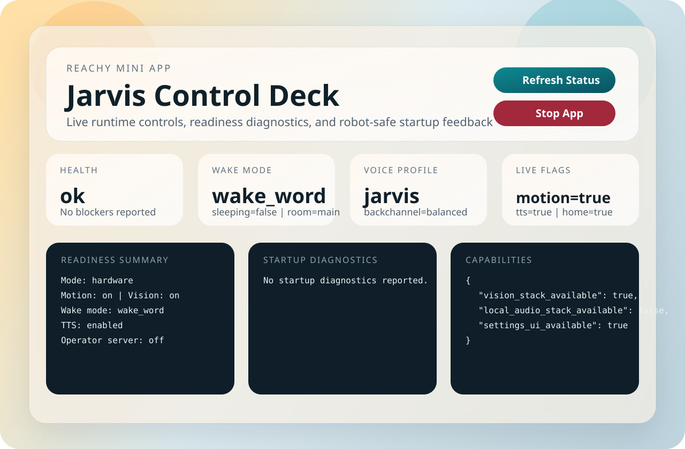

Conversation
Fast first response
Jarvis is tuned for early audible feedback, streamed replies, and immediate barge-in so the robot stays conversational instead of feeling transactional.
Reachy Mini Community App
Low-latency conversation, expressive motion, barge-in, face-aware presence, and live runtime controls are bundled into a single Reachy Mini app package.

Conversation
Jarvis is tuned for early audible feedback, streamed replies, and immediate barge-in so the robot stays conversational instead of feeling transactional.
Embodiment
Presence, gaze, and expressive gestures are integrated into the runtime instead of treated as isolated canned reactions.
Operator UX
The packaged settings panel exposes wake mode, sleep state, personality, motion, and TTS controls directly from the Reachy dashboard.
Operations
App compatibility checks run in CI, and the release path now includes a dedicated Reachy app smoke-test runbook for daemon and hardware validation.